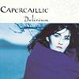

Celtic Lyrics Corner > Artists & Groups > Capercaillie > Delirium > Breisleach
|  | Breisleach |
| Credits : | Aonghas MacNeacail & Donald Shaw |
| Appears On : | Delirium ; Dusk Till Dawn |
| Language : | Gàidhlig (Scottish Gaelic) |
| Other Versions : |
"
When You Return
" on Capercaillie's album Cåpèrçaillie
" Breisleach " on James Graham's album Siubhal |
| Lyrics : | English Translation : |
| Chaidh mi 'n-dé dhan choille challtainn | I went to the hazelwood yesterday |
| Shireadh chnòthan airson bladh | Seeking hazelnuts for food |
| Ach 's e bh'air a h-uile geug ach | But on every branch and twig |
| D'aodann-sa gam thriall | Was your pursuing face |
| Chaidh mi 'n-dé gu tràigh a' mhaoraich | I went to the fertile shore yesterday |
| Lòn de choilleagan a bhuain | To gather cockles for a meal |
| Nochd a h-uile slige neamhnaid | Every single shell was filled with |
| D'àilleachd-sa a luaidh | Your beauty, my love |
| Chaidh mi staigh dhan aon taigh-òsda | I went into the alehouse |
| Son do sgiùrsadh as mo cheann | To expel you from my head |
| H-uile glainne thog mi thaom do | Every glass I raised, your beauty |
| Mhaiseachd aist' na deann | Overflowed from it |
| Chiaon mi tràth a-raoir dhan leabaidh | I went early to bed last night |
| Thusa ruagadh as le suain | To escape you in sleep |
| Ach cha tug thu cead dhomh cadal | But you kept me awake 'til |
| Gus an dèanainn duan | I'd make you a song |
| Dh'iarrainn-sa bhith saor od thòireadh | I'd wish we were torn asunder |
| Ach gu bheil sinn roinnt o chéil' | Were we not apart |
| Do chumadh bhith an àit' do shamhla | Let your presence replace my image of you |
| Agam bhios an fhèill | And how I'd rejoice |
| Dh'fhàg thu mi 'nam bhaothair gòrach | You've brought me to foolish babbling |
| Bòdhradh chàirdean le do chliù | Tiring your friends with praise of you |
| Nuair a thig thu chì iad nach eil | When you return they'll see that |
| Mearachd ann am fhiù | My words are true |
| Chì iad sgurr a' danns le saobh-shruth | They'll see mountains dance with ripples |
| Famh is iolair' anns an ruidhl' | Mole and eagle step the reel |
| Stamh gu caomh ag altram sùbh-làir | Red rasp held by kind sea-tangle |
| Mireadh mu an sùil | Sport before their eyes |
| Chì iad mis' is thusa sùgradh | They'll see you and me make merry |
| Bil ri bil ar n-anail aoint' | Lip to lip our breath as one |
| Cniadachadh mar seo gu sìor le | Caressing thus forever |
| Chéile b' e ar maoin | Together our reward |